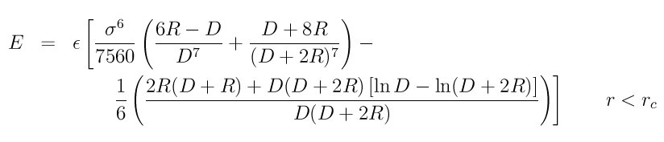

fix wall/lj93 command¶
fix wall/lj126 command¶
fix wall/lj1043 command¶
fix wall/colloid command¶
fix wall/harmonic command¶
Syntax¶
fix ID group-ID style face args ... keyword value ...
- ID, group-ID are documented in fix command
- style = wall/lj93 or wall/lj126 or wall/lj1043 or wall/colloid or wall/harmonic
- one or more face/arg pairs may be appended
- face = xlo or xhi or ylo or yhi or zlo or zhi
args = coord epsilon sigma cutoff
coord = position of wall = EDGE or constant or variable
EDGE = current lo or hi edge of simulation box
constant = number like 0.0 or -30.0 (distance units)
variable = equal-style variable like v_x or v_wiggle
epsilon = strength factor for wall-particle interaction (energy or energy/distance^2 units)
epsilon can be a variable (see below)
sigma = size factor for wall-particle interaction (distance units)
sigma can be a variable (see below)
cutoff = distance from wall at which wall-particle interaction is cut off (distance units)
- zero or more keyword/value pairs may be appended
- keyword = units or fld
units value = lattice or box lattice = the wall position is defined in lattice units box = the wall position is defined in simulation box units fld value = yes or no yes = invoke the wall constraint to be compatible with implicit FLD no = invoke the wall constraint in the normal way pbc value = yes or no yes = allow periodic boundary in a wall dimension no = require non-perioidic boundaries in any wall dimension
Examples¶
fix wallhi all wall/lj93 xlo -1.0 1.0 1.0 2.5 units box
fix wallhi all wall/lj93 xhi EDGE 1.0 1.0 2.5
fix wallhi all wall/lj126 v_wiggle 23.2 1.0 1.0 2.5
fix zwalls all wall/colloid zlo 0.0 1.0 1.0 0.858 zhi 40.0 1.0 1.0 0.858
Description¶
Bound the simulation domain on one or more of its faces with a flat wall that interacts with the atoms in the group by generating a force on the atom in a direction perpendicular to the wall. The energy of wall-particle interactions depends on the style.
For style wall/lj93, the energy E is given by the 9/3 potential:

For style wall/lj126, the energy E is given by the 12/6 potential:

For style wall/lj1043, the energy E is given by the 10/4/3 potential:

For style wall/colloid, the energy E is given by an integrated form of the pair_style colloid potential:
For style wall/harmonic, the energy E is given by a harmonic spring potential:

In all cases, r is the distance from the particle to the wall at position coord, and Rc is the cutoff distance at which the particle and wall no longer interact. The energy of the wall potential is shifted so that the wall-particle interaction energy is 0.0 at the cutoff distance.
Up to 6 walls or faces can be specified in a single command: xlo, xhi, ylo, yhi, zlo, zhi. A lo face interacts with particles near the lower side of the simulation box in that dimension. A hi face interacts with particles near the upper side of the simulation box in that dimension.
The position of each wall can be specified in one of 3 ways: as the EDGE of the simulation box, as a constant value, or as a variable. If EDGE is used, then the corresponding boundary of the current simulation box is used. If a numeric constant is specified then the wall is placed at that position in the appropriate dimension (x, y, or z). In both the EDGE and constant cases, the wall will never move. If the wall position is a variable, it should be specified as v_name, where name is an equal-style variable name. In this case the variable is evaluated each timestep and the result becomes the current position of the reflecting wall. Equal-style variables can specify formulas with various mathematical functions, and include thermo_style command keywords for the simulation box parameters and timestep and elapsed time. Thus it is easy to specify a time-dependent wall position. See examples below.
For the wall/lj93 and wall/lj126 and wall/lj1043 styles, epsilon and sigma are the usual Lennard-Jones parameters, which determine the strength and size of the particle as it interacts with the wall. Epsilon has energy units. Note that this epsilon and sigma may be different than any epsilon or sigma values defined for a pair style that computes particle-particle interactions.
The wall/lj93 interaction is derived by integrating over a 3d half-lattice of Lennard-Jones 12/6 particles. The wall/lj126 interaction is effectively a harder, more repulsive wall interaction. The wall/lj1043 interaction is yet a different form of wall interaction, described in Magda et al in (Magda).
For the wall/colloid style, R is the radius of the colloid particle, D is the distance from the surface of the colloid particle to the wall (r-R), and sigma is the size of a constituent LJ particle inside the colloid particle and wall. Note that the cutoff distance Rc in this case is the distance from the colloid particle center to the wall. The prefactor epsilon can be thought of as an effective Hamaker constant with energy units for the strength of the colloid-wall interaction. More specifically, the epsilon pre-factor = 4 * pi^2 * rho_wall * rho_colloid * epsilon * sigma^6, where epsilon and sigma are the LJ parameters for the constituent LJ particles. Rho_wall and rho_colloid are the number density of the constituent particles, in the wall and colloid respectively, in units of 1/volume.
The wall/colloid interaction is derived by integrating over constituent LJ particles of size sigma within the colloid particle and a 3d half-lattice of Lennard-Jones 12/6 particles of size sigma in the wall. As mentioned in the preceeding paragraph, the density of particles in the wall and colloid can be different, as specified by the epsilon pre-factor.
For the wall/harmonic style, epsilon is effectively the spring constant K, and has units (energy/distance^2). The input parameter sigma is ignored. The minimum energy position of the harmonic spring is at the cutoff. This is a repulsive-only spring since the interaction is truncated at the cutoff
For any wall, the epsilon and/or sigma parameter can be specified as an equal-style variable, in which case it should be specified as v_name, where name is the variable name. As with a variable wall position, the variable is evaluated each timestep and the result becomes the current epsilon or sigma of the wall. Equal-style variables can specify formulas with various mathematical functions, and include thermo_style command keywords for the simulation box parameters and timestep and elapsed time. Thus it is easy to specify a time-dependent wall interaction.
Note
For all of the styles, you must insure that r is always > 0 for all particles in the group, or LAMMPS will generate an error. This means you cannot start your simulation with particles at the wall position coord (r = 0) or with particles on the wrong side of the wall (r < 0). For the wall/lj93 and wall/lj126 styles, the energy of the wall/particle interaction (and hence the force on the particle) blows up as r -> 0. The wall/colloid style is even more restrictive, since the energy blows up as D = r-R -> 0. This means the finite-size particles of radius R must be a distance larger than R from the wall position coord. The harmonic style is a softer potential and does not blow up as r -> 0, but you must use a large enough epsilon that particles always reamin on the correct side of the wall (r > 0).
The units keyword determines the meaning of the distance units used to define a wall position, but only when a numeric constant or variable is used. It is not relevant when EDGE is used to specify a face position. In the variable case, the variable is assumed to produce a value compatible with the units setting you specify.
A box value selects standard distance units as defined by the units command, e.g. Angstroms for units = real or metal. A lattice value means the distance units are in lattice spacings. The lattice command must have been previously used to define the lattice spacings.
The fld keyword can be used with a yes setting to invoke the wall constraint before pairwise interactions are computed. This allows an implicit FLD model using pair_style lubricateU to include the wall force in its calculations. If the setting is no, wall forces are imposed after pairwise interactions, in the usual manner.
The pbc keyword can be used with a yes setting to allow walls to be specified in a periodic dimension. See the boundary command for options on simulation box boundaries. The default for pbc is no, which means the system must be non-periodic when using a wall. But you may wish to use a periodic box. E.g. to allow some particles to interact with the wall via the fix group-ID, and others to pass through it and wrap around a periodic box. In this case you should insure that the wall if sufficiently far enough away from the box boundary. If you do not, then particles may interact with both the wall and with periodic images on the other side of the box, which is probably not what you want.
Here are examples of variable definitions that move the wall position in a time-dependent fashion using equal-style variables. The wall interaction parameters (epsilon, sigma) could be varied with additional variable definitions.
variable ramp equal ramp(0,10)
fix 1 all wall xlo v_ramp 1.0 1.0 2.5
variable linear equal vdisplace(0,20)
fix 1 all wall xlo v_linear 1.0 1.0 2.5
variable wiggle equal swiggle(0.0,5.0,3.0)
fix 1 all wall xlo v_wiggle 1.0 1.0 2.5
variable wiggle equal cwiggle(0.0,5.0,3.0)
fix 1 all wall xlo v_wiggle 1.0 1.0 2.5
The ramp(lo,hi) function adjusts the wall position linearly from lo to hi over the course of a run. The vdisplace(c0,velocity) function does something similar using the equation position = c0 + velocity*delta, where delta is the elapsed time.
The swiggle(c0,A,period) function causes the wall position to oscillate sinusoidally according to this equation, where omega = 2 PI / period:
position = c0 + A sin(omega*delta)
The cwiggle(c0,A,period) function causes the wall position to oscillate sinusoidally according to this equation, which will have an initial wall velocity of 0.0, and thus may impose a gentler perturbation on the particles:
position = c0 + A (1 - cos(omega*delta))
Restart, fix_modify, output, run start/stop, minimize info¶
No information about this fix is written to binary restart files.
The fix_modify energy option is supported by this fix to add the energy of interaction between atoms and each wall to the system’s potential energy as part of thermodynamic output.
This fix computes a global scalar energy and a global vector of forces, which can be accessed by various output commands. Note that the scalar energy is the sum of interactions with all defined walls. If you want the energy on a per-wall basis, you need to use multiple fix wall commands. The length of the vector is equal to the number of walls defined by the fix. Each vector value is the normal force on a specific wall. Note that an outward force on a wall will be a negative value for lo walls and a positive value for hi walls. The scalar and vector values calculated by this fix are “extensive”.
No parameter of this fix can be used with the start/stop keywords of the run command.
The forces due to this fix are imposed during an energy minimization, invoked by the minimize command.
Note
If you want the atom/wall interaction energy to be included in the total potential energy of the system (the quantity being minimized), you MUST enable the fix_modify energy option for this fix.
Restrictions¶
none
Default¶
The option defaults units = lattice, fld = no, and pbc = no.
(Magda) Magda, Tirrell, Davis, J Chem Phys, 83, 1888-1901 (1985); erratum in JCP 84, 2901 (1986).